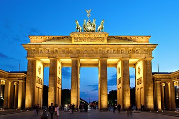

One of the most popular highland areas in all of Europe is the stunning Black Forest, which is known for its dark, heavily forested hills.
Among the most popular Germany tourist attractions, some of Berlin Wall's sections have been well preserved and some are even covered in colorful graffiti.
Insel Mainau, the magnificent Flower Island on lovely Lake Constance, is 110 acres in size and draws lots of tourists to its lovely parks and gardens, which are rich in semitropical and tropical vegetation.
Cologne is another of those wonderful old German cities that has managed to preserve its past for modern generations to enjoy.
One of the most alluring destinations along Germany's well-known Romantic Road tourist circuit is the old Franconian imperial city of Rothenburg.